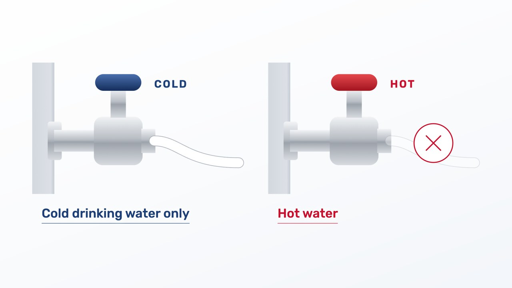
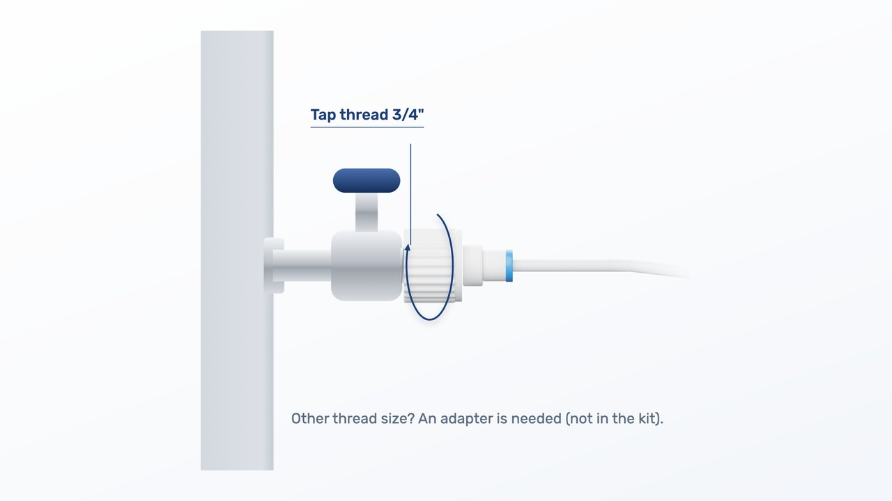
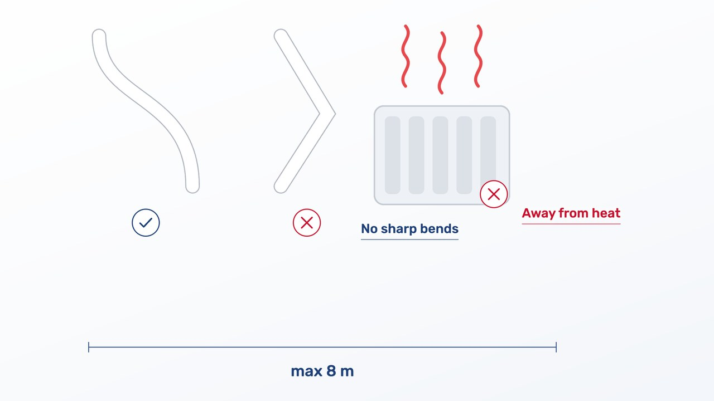
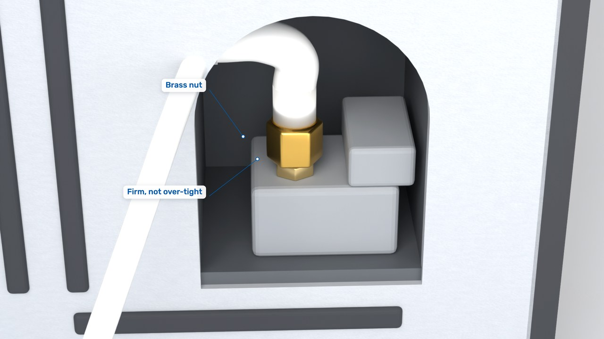
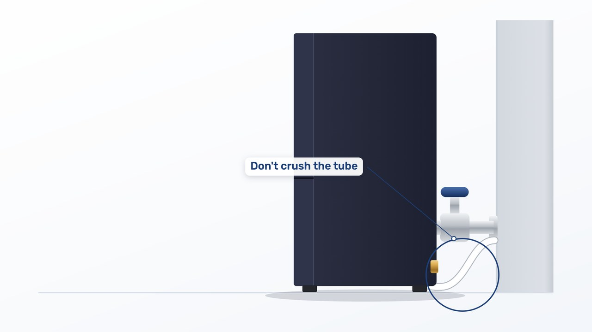
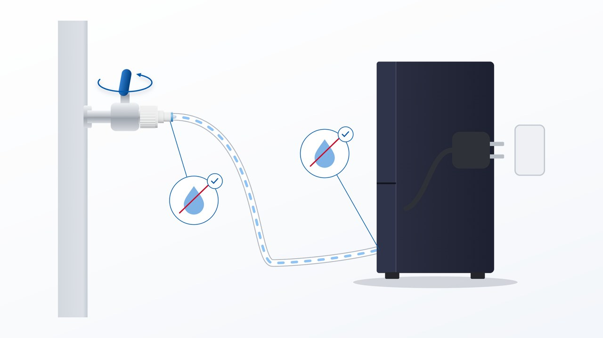
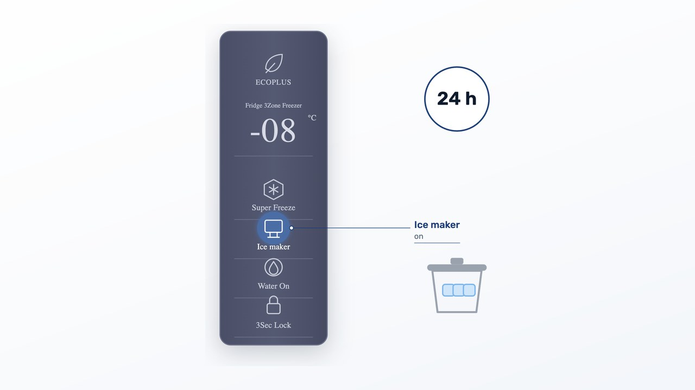

לפני שמתחילים
- מנתקים את המקרר מהחשמל
- סוגרים את ברז המים הראשי
- מוודאים שמכונת הקרח כבויה

מה בערכה
צינור אחד, מוכן לשימוש: בקצה אחד מחבר לבן לברז (תבריג ¾″, עם דיסקת גומי בפנים), בקצה השני אום פליז למקרר.
לא חותכים את הצינור, ומשתמשים רק בערכה החדשה.
החיבור פשוט, ב-4 שלבים
החיבור לאספקת המים



החיבור למקרר




בדיקה ושטיפה





אם משהו לא עובד
אין מים מברז המים שבדלת?
בודקים לפי הסדר:
- הפנל לא נעול (לחיצה ארוכה על 3Sec Lock משחררת).
- הזרמת המים פעילה: לוחצים על Water on, והנורית דולקת.
- ברז המים הראשי פתוח.
- המקרר מחובר לחשמל.
- הדלת הימנית של תא הקירור סגורה. כשהיא פתוחה לא יוצאים מים, גם כשההזרמה פעילה.
טפטוף באחד החיבורים?
סוגרים את ברז המים הראשי. בחיבור לברז בודקים שדיסקת הגומי יושבת בתוך המחבר הלבן; בגב המקרר מהדקים שוב את אום הפליז, חזק אבל לא יותר מדי. פותחים את הברז בהדרגה ובודקים שוב.
המים אפורים או עם גרגרים?
במים הראשונים זה תקין: פחם מהמסנן החדש. ממשיכים בשטיפה (4 ליטר, המתנה של 4 דקות, שלוש פעמים) עד שהמים צלולים.
כמה זמן עד שיש קרח?
עד 24 שעות מהרגע שמדליקים את מכונת הקרח. את הקוביות הראשונות זורקים.